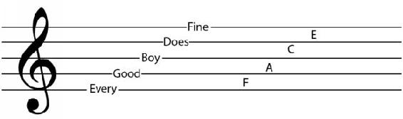
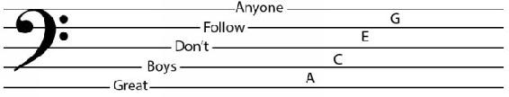

It’s important to remember the sets of notes for both treble and bass clef since they are the most used clefs that can cover many instruments.
The notes that spaces represent in the case of the treble clef are easy to remember because they spell the word: FACE. For lines you can use mnemonics, for example:

Figure 2.5.1.
In the case of the bass clef the notes that are on the spaces spell: ACEG (All Cows Eat Grass). You can use something like this:

Figure 2.5.2. Great Boys Don’t Follow Anyone for lines, and All Cows Eat Grass for spaces
You can also try to create your own mnemonics. In any case it is important to memorize these notes.